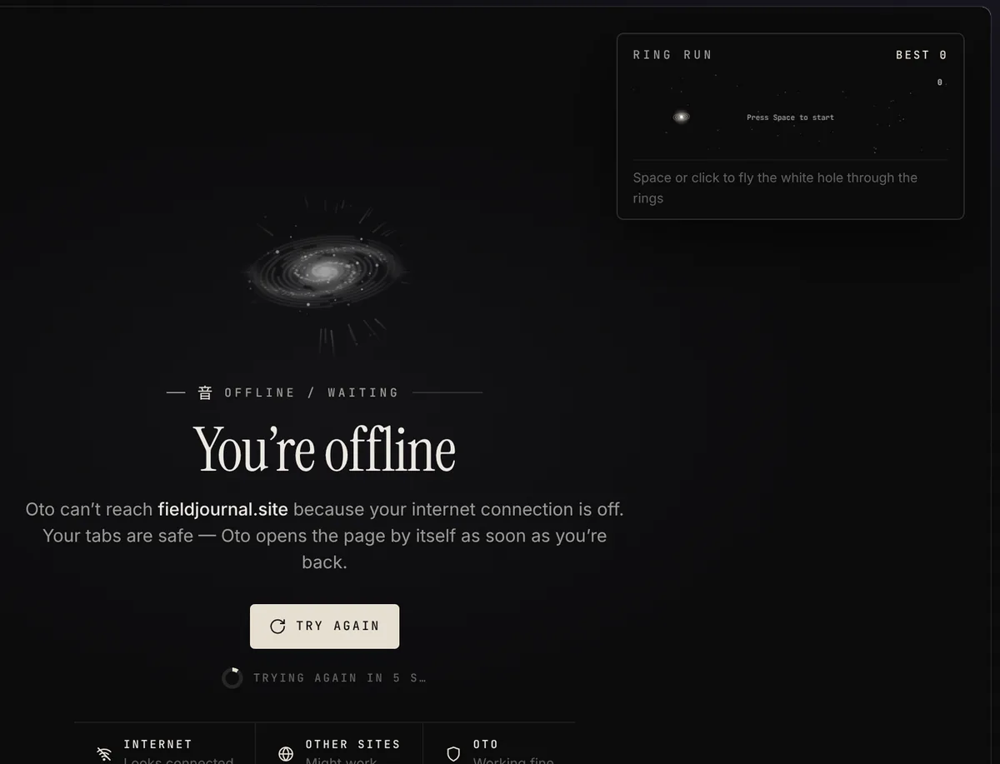

ESSAY
The quiet web
Small sites, slow reading, and the pages that are still worth keeping open.
 OTO
OTO
Vertical tabs, spaces, built-in ad blocking, and your phone linked to your PC.
Free · Windows 10 and 11 · Updates itself
Small sites, slow reading, and the pages that are still worth keeping open.
Three hours of slow synths and field recordings. No ads tonight, either way.
500 g flour, 375 g water, 10 g salt, and most of a Saturday.
Best seen from somewhere dark, looking east, any night this week.
Click the tabs. That's Oto's sidebar.
Your tabs live in a sidebar instead of across the top, grouped into spaces for work, school, music or anything else. Ads and trackers are blocked before the page even loads.
Everything is dressed in one calm look: near-black, cream, thin lines, quiet type. Nothing blinks at you.



Oto has no telemetry, no analytics and no crash reporting. Here's what it does instead.
Ads and trackers are stopped with uBlock Origin's lists. Known malware and phishing sites get a warning, checked on your PC.
Settings, bookmarks and passwords are locked with your password before upload. The server only stores scrambled data.
Cookies and site data stay in memory and are gone when you close the window. Nothing goes into your history.
Saved logins are encrypted with Windows' own data protection, the same one Chrome uses. No readable copies, ever.
Every site and every Oto window runs in Chromium's sandbox. Extensions never run in private windows.
Each update must match the signed record of Oto's own build on GitHub, or it's deleted. Chromium fixes ship within days.
Tabs, Oto Shield, the Oto look and desktop-site mode on your phone. Sign in with the same account and your phone appears in My phone on your PC within seconds. It's new (version 0.1) and updates itself from the app menu.
Android 8 or newer. Download Oto-Android-…-arm64.apk from the latest release on your phone and open it.

Get Oto-Setup-1.4.0.exe from the latest release and open it.
Oto isn't code-signed yet, so Windows may say it's unrecognised. Choose More info, then Run anyway.
Import bookmarks from your old browser and pick your layout, or sign in to your Oto account.
Want to be sure the file is the real one? Compare it with SHA256SUMS.txt on the release page, or check GitHub's signed build record:
gh attestation verify Oto-Setup-1.4.0.exe --repo mukairyo/otoWindows 10 or 11, 64-bit. New versions download by themselves; you'll see Restart now in the sidebar.